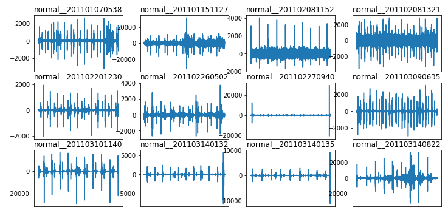
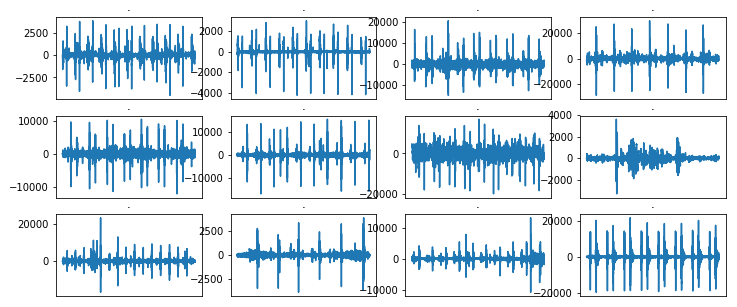
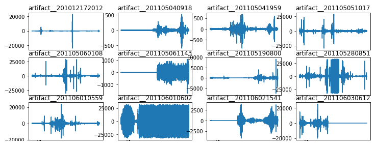

Deep learning used for segmentation only
Prior work leaned on hand-crafted features (HMMs, wavelets, entropy). Deep networks had been used to locate S1/S2, not to classify the abnormality.
M.Tech Thesis · Information Technology · ABV-IIITM Gwalior · 2018–19
Can a network tell a healthy heartbeat from a murmur, or from a recording ruined by noise? This thesis compares classical, convolutional, recurrent and hybrid CNN–RNN models on phonocardiogram (PCG) recordings and finds that the hybrids get the best of both.
Cardiovascular disease is one of the leading causes of death worldwide, and listening to the heart is still one of the cheapest first checks a clinician can make. A heartbeat is a pair of sounds, S1 (“lub”) and S2 (“dub”). Disease, or simply a bad recording, adds extra sounds on top of that rhythm.
The thesis has two goals. The first is to segment a recording into its S1 and S2 sounds. The second is to classify recordings into normal and abnormal variants: murmurs, extra heart sounds, extrasystoles and artifacts. Ten experiments are run on public benchmark recordings: an empirical-wavelet baseline, an SVM, a modified segmentation CNN, a deep CNN, LSTM, GRU and Bi-LSTM networks, and three hybrid CNN–RNN networks.
The pattern is consistent. Recurrent models fit the training data well but generalise poorly. The CNN generalises well but underfits. Putting a convolutional feature extractor in front of a recurrent layer gives both, and CNN-Bi-LSTM is the best model overall.
Heart soundsPhonocardiogramDeep learningHybrid neural networksSequence modelsClassification
Each category leaves a different signature on the waveform. Pick one to see a simplified trace. The traces are synthetic sketches of the pattern, not patient recordings.
Real recordings from PASCAL Set A, plotted in the classification notebook. Each panel is one file.



A review of HMM, time–frequency, wavelet, ANN/SVM and recurrent-network approaches found four gaps.
Prior work leaned on hand-crafted features (HMMs, wavelets, entropy). Deep networks had been used to locate S1/S2, not to classify the abnormality.
Several studies were evaluated on small private sets, so their results may not transfer to larger data.
Most work separates normal from abnormal, or sub-types murmurs. Extra heart sounds, extrasystoles and artifacts were largely ignored.
Several existing classifiers had modest accuracy, leaving space for architectures built for the problem.
Segment heart sounds into S1 and S2, then classify recordings into seven categories: innocent murmur, noisy innocent murmur, abnormal murmur, noisy abnormal murmur, extra heart sound, extrasystole and artifact. Recordings that fit none of these are set aside as unclassified.
Every model sees the same pre-processed signal. Only the network in the middle changes.
The thesis draws on the PASCAL Classifying Heart Sounds Challenge and the PhysioNet/CinC 2016 database: 176 recordings for segmentation and 832 for classification, from people aged 18–90, with an 85/15 train–test split.
The released notebooks run on PASCAL Set A: 176 recordings, re-labelled into three classes. That includes the 52 unlabelled files, which were labelled by inspecting their waveforms.
Original Set A labels: 40 artifact, 31 normal, 34 murmur, 19 extra heart sound (merged into normal), 52 unlabelled.
Layer stacks as defined in the notebooks, with output shapes and parameter counts from model.summary(). The hybrid models share one convolutional front-end and differ only in their recurrent layer.
Training accuracy measures how well a model fits the data it learned from; validation accuracy measures how well it generalises. The distance between them is the story of this thesis.
Points on the dashed line generalise as well as they fit. Points far below it are overfitting.
LSTM, GRU and Bi-LSTM reach 90–92% training accuracy but only 30–40% on validation: they memorise the training set.
The deep CNN is the reverse: it validates almost as well as it trains (77% vs 79%), but plateaus lower.
A CNN front-end feeding a recurrent layer closes the gap. CNN-Bi-LSTM reaches 92% training and 85% validation accuracy, with 91.5% recall.
| Model | Family | Accuracy % | Val. accuracy % | Gap (pts) | Recall % | Loss | Val. loss |
|---|
Click a column to sort. The S1/S2 segmentation CNN, reported separately, reaches 95–96% training accuracy with a loss of 0.085. The SVM was scored on accuracy only.
Re-plotted epoch by epoch from the training logs saved in the two notebooks. These are single runs, so the final numbers differ slightly from the thesis table. The notebooks also include Simple RNN, Bi-GRU and Bi-RNN runs that the thesis does not report.
Deep audio models want far more data than public heart-sound sets provide, and recurrent models need GPU time to train well. The study works within that hardware–data trade-off.
Proceedings of the International Conference on Advances in Electronics, Electrical & Computational Intelligence (ICAEEC), 2019
The paper narrows the thesis to one question: can deep networks separate genuine heart sounds from artifacts, meaning recordings corrupted by speech, echoes, feedback or other noise? It frames the task as three classes (normal, abnormal and artifact) on the PASCAL benchmark and compares the same CNN, recurrent and hybrid model families. The hybrid CNN-Bi-LSTM again comes out on top.
The published article is available from SSRN under the publisher's access terms. This page describes the work in the author's own words and does not reproduce the article's text, figures or tables. Please cite and read the published version.
@inproceedings{sharma2019artifacts,
title = {Deep Learning Approach for Analysis
of Artifacts in Heart Sound},
author = {Sharma, Saurabh and Dhar, Joydip},
booktitle = {Proceedings of the International
Conference on Advances in Electronics,
Electrical \& Computational
Intelligence (ICAEEC)},
year = {2019},
doi = {10.2139/ssrn.3577626},
url = {https://ssrn.com/abstract=3577626}
}.
├── mtp-on-heartbeat-sound.py
│ # data loading, labelling, waveform plots,
│ # Deep CNN, LSTM, Simple RNN, GRU,
│ # Bi-LSTM, Bi-GRU, Bi-RNN
├── mtp-on-heartbeat-sound-hybrid.py
│ # CNN-LSTM, CNN-GRU, CNN-Bi-LSTM
├── index.html · assets/ # this page
└── README.md../input/set_a.csv and ../input/set_a/ exist. This is the layout the scripts expect, and it matches a Kaggle notebook.model = Sequential()
model.add(InputLayer(input_shape=x_train.shape[1:]))
# convolutional front-end: features
model.add(Conv1D(32, kernel_size=3, padding='same', activation='relu'))
model.add(MaxPool1D(pool_size=3)); model.add(Dropout(0.3))
model.add(Conv1D(64, kernel_size=3, padding='same', activation='relu'))
model.add(MaxPool1D(pool_size=3)); model.add(Dropout(0.35))
model.add(Conv1D(128, kernel_size=3, padding='same', activation='relu'))
model.add(MaxPool1D(pool_size=3)); model.add(Dropout(0.4))
# recurrent back-end: temporal context, both directions
model.add(Bidirectional(LSTM(50, return_sequences=True)))
model.add(Dropout(0.25))
model.add(Flatten())
model.add(Dense(128, activation='relu')); model.add(Dropout(0.45))
model.add(Dense(3, activation='softmax'))
model.compile(loss='categorical_crossentropy', optimizer='adam',
metrics=['acc', recall])